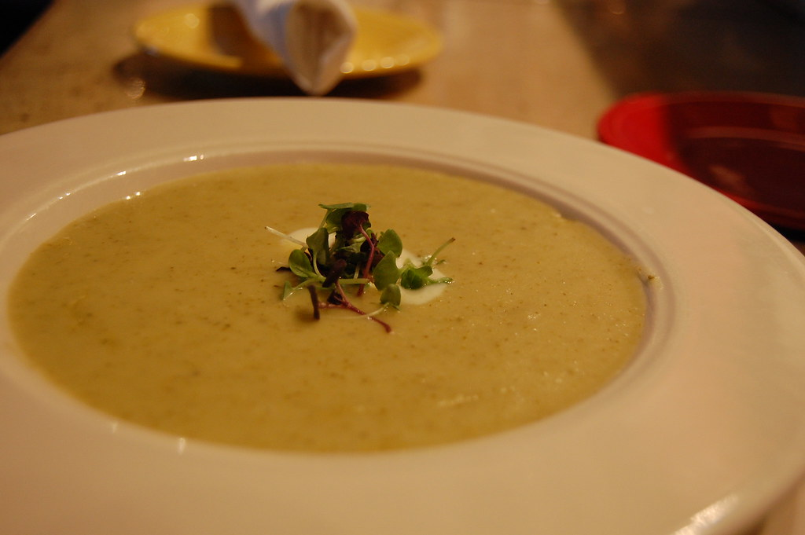

Potato & Leek Soup
A winter treat
I like soup.

Ingredients
- 2 tbsp unsalted butter
- 2 large leeks, white and pale green parts, rinsed and chopped roughly
- 1 quart vege stock
- 0.75 lb medium russet potatoes, peeled and cut into quarters
- 1 bay leaf
- Salt and pepper
- 1 cup buttermilk
- 0.5 cup heavy cream
- 0.5 tsp fresh ground nutmeg
- sliced chives or scallions to serve
Steps
- Melt butter in large saucepan or dutch oven over medium heat.
- Add leeks, reduce heat to low, and cook with frequent stirring until leeks are very soft, but not browned.
- Add stock, potatoes, and bay leaf. Season lightly with salt and pepper.
- Bring to a boil over high heat, reduce to a gentle simmer, cover, and cook until potatoes are very tender.
- Add heavy cream and buttermilk to the pot. Discard the bay leaf.
- Blend soup, taking care not to over blend. Use slow speed, and if possible break up potatoes manually.
- Whisk in grated nutmeg, and serve with chives or scallions on top.